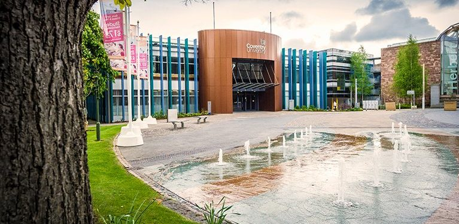
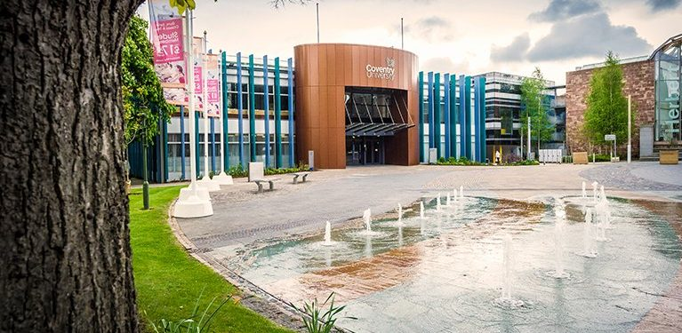
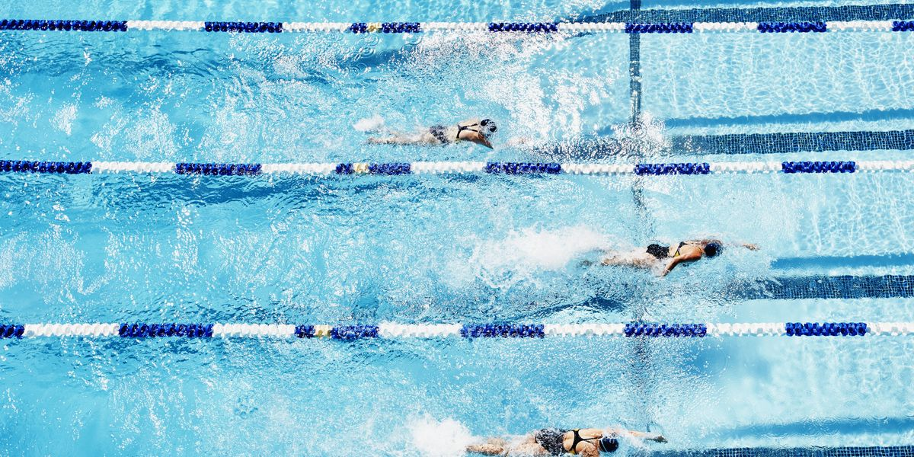
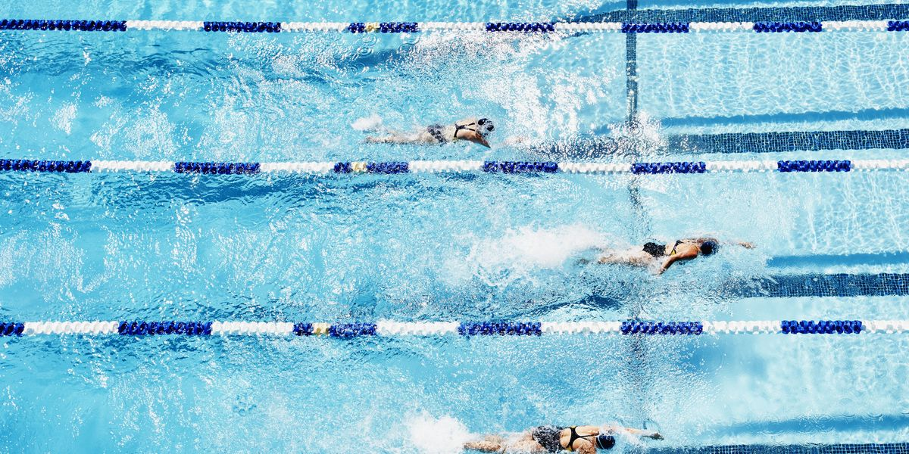

All about me
 

My name is Monica and i am 21 years old living in london,
i am the oldest child and only have one sibling (a brother). I am currently doing a nology course to become a data analyst!!
My background before the course

Before starting this course i had just graduated from university with a degree in Marketing,
i am still very interested in the subject but i would now like to explore the world of tech and hopefully become a data analyst.
My hobbies (Lol)
 

Some of my hobbies consist of going out with my friends either shopping or to the movies but becuse of Covid that wasnt posiible until recently.
I also go to the leisure center to swim on the weekends (when i can be bothered)
All about the Nology Data Analyst course
The Nology data analyst job is 6 weeks long and offers full time training with expereinced coaches,
training is done online in a classroom style setting which allows students to really engage and understand what they are being taught.
At the end of the 6 weeks Nology helps you find a job as a junior data analyst.
If your interested in getting into the tech feild and have may not have any previous experience relating to technology
then i suggest you head over to the nology website and apply now! This is the link to their website
Contact Details
If you want to keep in touch here are my contact details:
Email address: Monicaadediwura@gmail.com
phone number: 07845265332